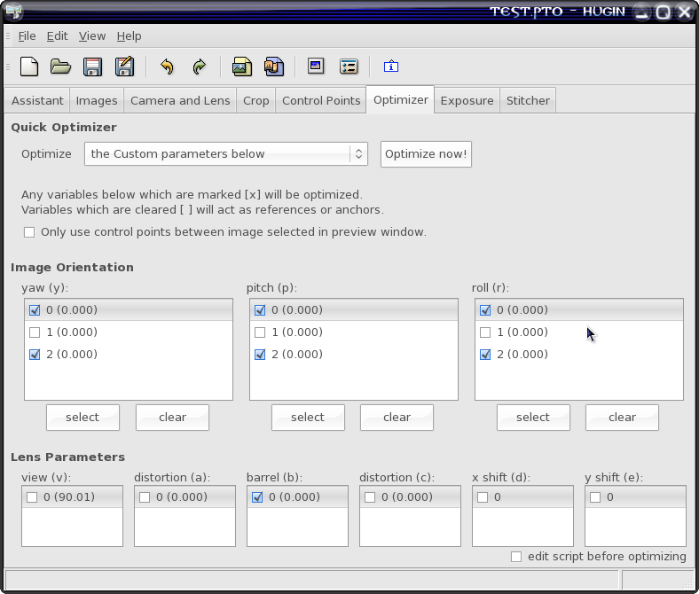

The Lensfun library provides many different mathematical models for lens distortion. They are mostly of theoretical interest but could be useful when porting calibration data made with some other software. These models are described in the comments to the lfDistortionModel type. For our needs we'll use just two models: the "ptlens" model, which is a fourth-order polynomial:
Rd = a * Ru^4 + b * Ru^3 + c * Ru^2 + (1 - a - b - c) * Ru
(here Ru is the radius of the undistorted pixel, Rd is the radius of the distorted pixel). Another useful model is the “poly3” model, which is a simplified 3rd order polynomial:
Rd = k1 * Ru^3 + (1 - k1) * Ru
If you pay attention you can see that poly3 is a simplified variant of the ptlens model, with a=0, b=k1 and c=0. Thus, poly3 is suitable for lenses with more predictable distortions, and ptlens model can be used if the poly3 model does not give good enough results (which means that your lens distortion can not be approximated with a simplified 3rd-order polynomial).
As Pentax 12–24 is a very linear lens with very little distortion (for its wide angle), we'll use the poly3 model here. Computing the ptlens model coefficients is almost as simple, you'll just have to click more checkboxes in Hugin :)
So we now will run Hugin and load several images we made at one focal length (three to be precise) at a distance of at least 8 metres. Now switch to the “Control points” page, select image 0 on left, image 1 on right and make at least 10 quality control points. Try to place points in high-contrast places like corners and edges. Use only “normal” control points, don't mark horizontal and vertical lines as we aren't going to make a panorama anyway. Try to pick points spreaded around the whole image, and don't forget to put points in at least two corners of the shot. Here's a example of how a good distribution of control points looks:

You also can try to use the autogenerated control points (generate them with autopano-complete.sh or from Hugin directly), but I had little luck with it.
Now go to the “Optimizer” page and select “Optimize the custom parameters below”, then click the checkboxes for “yaw (y)”, “pitch (p)”, “roll (r)”, and “barrel (b)” parameters. If you're opted for the ptlens model, also click “a” and “c”:
Please don't check other boxes (like “view (v)” or “x/y shift”), because this will introduce distortions that Lensfun can't reproduce! Also make sure those parameters are all zero (except “view” which should correspond to lens angle corresponding to your focal length), if they are not, go to the “Images” and “Camera and Lens” pages and clear them all. Also make sure the “crop factor” is exactly what you use in your lens description: sometimes it could differ a little (like 1.47 instead of 1.5 in my case), focal length must be the same in Hugin and Lensfun, otherwise they won't match.
Now press “Optimize now!”. If everything goes normal, Hugin will compute new values for all marked parameters. If something goes wrong, Hugin will display a message that the values computed seem way out of their normal range. This usually means that the control points are wrong somewhere; check them once again. If nothing helps, try to make a new series of test shots.
Now you can go to the “Camera and lens” page and collect the computed “b” (and, possibly, “a” and “c” if you need the ptlens model) parameters. In my case “b” was -0.01919, so I can start filling calibration data for my lens:
<lens>
<maker>Pentax</maker>
<model>SMC PENTAX DA 12-24mm F/4 ED AL IF</model>
<mount>Pentax KAF2</mount>
<cropfactor>1.5</cropfactor>
<calibration>
<distortion model="poly3" focal="12" k1="-0.01919" />
</calibration>
</lens>
Repeat these steps for every focal length at which you made test shots. This will take quite a bit of time, but in the end you will end with something like this:
<lens>
<maker>Pentax</maker>
<model>SMC PENTAX DA 12-24mm F/4 ED AL IF</model>
<mount>Pentax KAF2</mount>
<cropfactor>1.5</cropfactor>
<calibration>
<distortion model="poly3" focal="12" k1="-0.01919" />
<distortion model="poly3" focal="15" k1="-0.00774" />
<distortion model="poly3" focal="18" k1="-0.00345" />
<distortion model="poly3" focal="21" k1="-0.00199" />
<distortion model="poly3" focal="24" k1="0.00061" />
</calibration>
</lens>